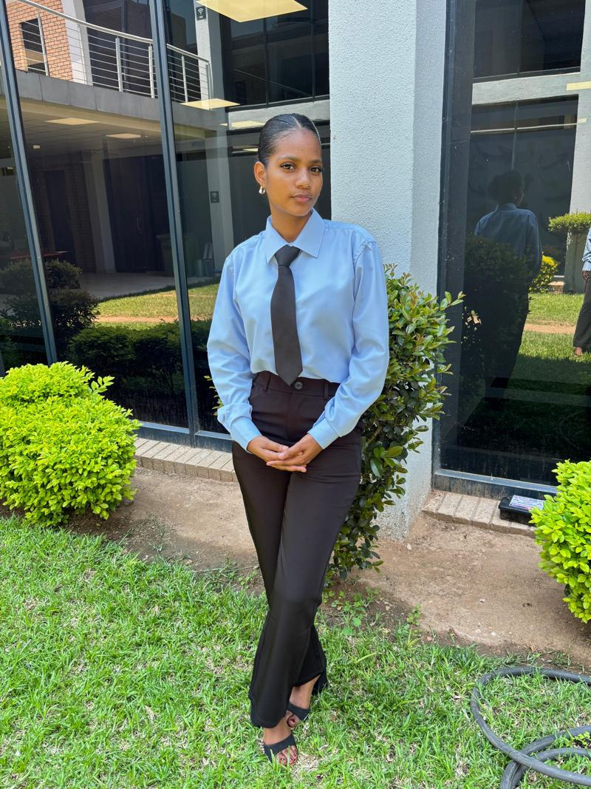
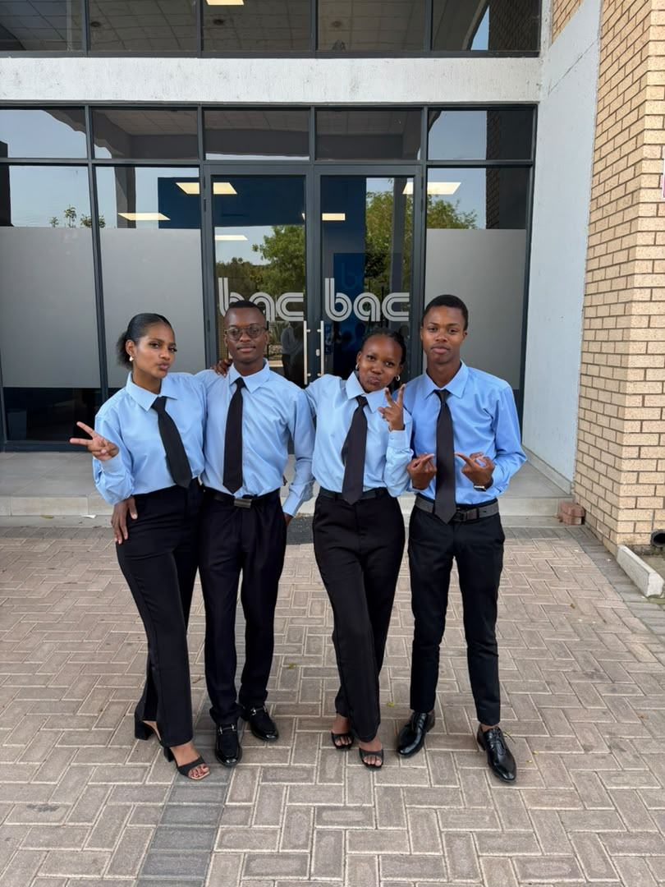
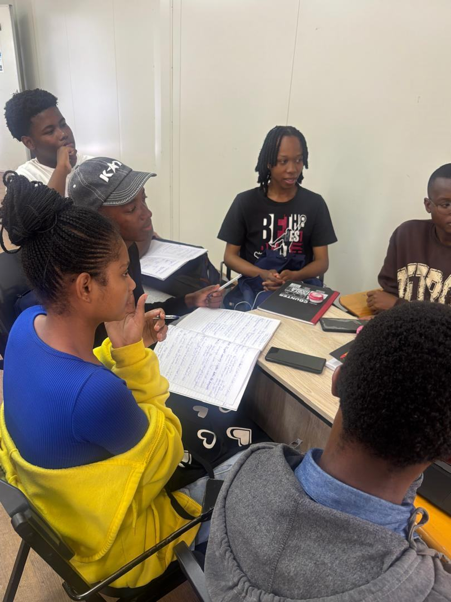

Data meets curiosity.
I’m a first-year student at the Botswana School of Business Sciences, learning to turn data into decisions. This space is where I reflect on what I learn and show I’m ready for an internship or attachment.
More about me →Year of study
Business Intelligence and Data Analytics, one module at a time.
Reflective posts
Honest write-ups of what I’ve learned, alone and in a group.
Skills
3 technical and 6 professional skills, growing every week.
Featured sections
Jessica Keneo Letsapa
Age 21 · Botswana · +267 74 089 536 · Jesssicakeneoletsapa@gmail.com
Profile
Motivated first-year Business Intelligence and Data Analytics student who is eager to apply classroom learning in a workplace, grow professionally and contribute to a team.
Education
Business Intelligence and Data Analytics (in progress)
Botswana School of Business Sciences · Year 1
[Add qualification level and expected completion year]
Secondary Education
[School name and year completed]
[Subjects and results]
Experience
[Role / Volunteer work / Group project] · [Organisation] · [Dates]
[Add 2–3 bullet points of what you did and achieved]
Key Skills
Data analysis (learning)Microsoft ExcelReport writingTeamworkCommunicationTime managementLanguages
[Add e.g. Setswana, English]
References
Available on request.
My first year: data and myself
What I’m learning about data and about myself.
What happened
Starting Business Intelligence and Data Analytics showed me that data is more than numbers. It is a way of answering real business questions. In my first modules I began organising information and reading simple charts.
How I felt
At first I felt nervous, because the terms and tools were new. As I practised, my confidence grew, especially when I could turn a messy table into a clear picture.
What I learned
- Consistent practice matters more than rushing.
- Writing notes out by hand helps me understand, not just remember.
- Asking questions early saves time later.
What I will do next
I will keep strengthening my Excel skills, begin learning SQL, and look for an internship or attachment where I can use data to support real decisions.
Group experience: working together
Ready for presentation
Showing up together, dressed and prepared for our group presentation.

Roles, deadlines & ideas
Planning sessions: dividing roles, setting deadlines and combining our work.

What happened
[Name the group project.] Our group had [number] members and we had to [describe the task]. We divided roles, set deadlines and met to combine our work.
My role
[Describe what you did, e.g. collecting information, analysing data, writing, presenting.]
Challenges
Group work was not always easy. Members have different schedules and working styles, so we had to communicate clearly to stay on track.
What I learned
- Clear roles and deadlines prevent confusion.
- Listening is as important as speaking.
- Giving and receiving feedback politely improves the final result.
How this prepares me for work
Workplaces depend on teamwork. This experience taught me to be reliable, communicate respectfully and take responsibility for my part of a shared goal.
What I can do, what I’m building
Technical skills
Microsoft ExcelData organising & cleaningCharts & basic visualisationProfessional skills
TeamworkClear writingActive listeningTime managementWillingness to learnReliabilityProject 1
Sales Database (Microsoft Access)
Computer Technology assignment · [Add date]
I designed a relational sales database with four linked tables (Customer, Inventory, Employee and Sale), each filled with 10 records, so sales of laptops and phones can be tracked by customer, item and employee.
Project 2
Rainfall Analysis (Microsoft Excel)
Excel assignment · [Add date]
I recorded a week of daily rainfall and used the MIN, MAX and AVERAGE functions to find the lowest (0), highest (21) and mean (9) values. I charted the week in a 3D bar chart titled “Average Daily Rainfall” and set out monthly figures from January to December.
Project 3
Shop Sales Database (Microsoft Access)
Computer Technology assignment · [Add date]
I built a relational database for a shop with four tables (Customer, Employee, Inventory and Sale), each with 10 records. Inventory holds stock levels and unit prices, and Sale records the quantity, price and date for each customer, item and employee.
Group project
The Student Success Plan
CSS group presentation · [Add date]
With my group I researched the challenges first-years face in communication, teamwork and study skills. Together we recommended solutions and presented a Student Success Plan.
Next · Planned
Personal Digital BLOG loading, then add some text to
Internship / attachment application
Ready-to-send email
How I learn best
I learn most effectively through reading and writing. When I read, I copy down the key notes and then rewrite them in my own words. Rewriting forces me to understand an idea instead of just recognising it.
Resources
Textbooks & notes: Introduction to Computer Technology & lecturer slides
Online learning: Gizmo AI, Khan Academy, Google Scholar
Tools: ChatGPT, Claude.ai, DeepSeek, Gemini
My study tips
- Read first, then rewrite. Copy the main points while reading, then rewrite them in your own words.
- Keep one notebook per module so revision is organised.
- Review notes within 24 hours while they are still fresh.
- Turn notes into questions and answer them in writing.
- Study in short, regular sessions instead of last-minute cramming.
Ready to learn, grow & contribute?
Looking for an internship or attachment? I’m eager to learn and grow with a team.
Let’s work together →